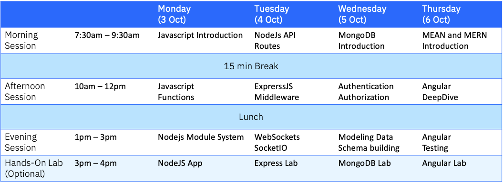

Background / Summary of the Labs.
In this session, you'll build a pure NodeJS chatbot. The completed app will allow a user to put in the name and join into a group chat. You'll build everything with NodeJs using the native HTTP module. This is the app you'll be building today

Codelab: Introduction to NodeJS
This codelab will go through the process of creating a simple NodeJS application. This application will be using a few modules such as fs, express, request, and mustache. We will learn how to initialize a new NodeJS project, install packages, send requests, and serve a simple website with Express and Mustache.
If at any point during this tutorial you're lost or your code is not working, you can check the final files listed in this repository.
First we need to install NodeJS if it is not already done. Head over to https://nodejs.org and install the latest LTS version.
Once NodeJS installed, create a new folder for our new NodeJS project. Navigate to your new folder in your terminal and execute npm init. You'll have to choose a title, description and other options for our project. I called my main file index.js.
That's all for the setup phase, let's start coding!
Let's launch a web server using ExpressJS! First, we need to install the express package. To install a package simply execute npm install --save , in our case, the package name is express so we will enter npm install --save express.
The option --save (or -S) will add the package to the list of dependencies listed in your package.json file. This is particularly interesting if you need to install your project in a new environment and to avoid adding the node_modules folder in your repository which is a very bad idea. If you want to reinstall your project with all its dependencies, simply execute npm install.
Now, we'll need to create our index.js file. This file will be the main file we will be using.
Let's start by adding our express module to our code.
const express = require('express')
Note: NodeJS now supports ESNext (ES6+). You can use let/const, async/await, and all the cool features available in new versions of JavaScript.
Now, let's initialize a new web server.
const app = express()
And we can finally launch our web server on the port of our choice. Let's say 3000. We'll also add an index route to our server.
const PORT = 3000
app.get('/', (req, res) => {
res.send('Hello GDG Galway!')
})
app.listen(PORT, () => {
console.log(`Server listening on port ${PORT}...`)
})
Note: logs/warnings/errors will be displayed in the terminal used to launch your NodeJS application.
That's it! We're done. We have a running web server. Let's run our code by executing node index.js. Yay! The server is running! We can go to http://localhost:3000 and check if our server works.
Let's create a proper static HTML file to serve. We'll create a new folder called static and create hello.html. Let's add some code into it.
<!DOCTYPE html>
<html lang="en">
<head>
<meta charset="UTF-8">
<title>Hello!</title>
</head>
<body>
<h1>Hello GDG Galway!</h1>
</body>
</html>
To serve static files, we'll need to add a simple line to our main file.
app.use(express.static(`${__dirname}/static/`))
Note: The global variable
__dirname
is the path to your NodeJS project folder.
If we relaunch our application with node index.js, and go to http://localhost:3000/hello.html, we should see the content of our HTML file!
First, let's install mustache using npm install --save mustache. We now need to create a template file. We'll make a quick to-do list, so let's call it todos.html and place it in a new folder called templates. Mustache will use this file to generate the HTML code necessary to render our todos.
<!DOCTYPE html>
<html lang="en">
<head>
<meta charset="UTF-8">
<title>To-Do List</title>
</head>
<body>
<h1>To-Do List</h1>
<nav>
<a href="/todos">All</a>
<a href="/todos/pending">Pending</a>
<a href="/todos/completed">Completed</a>
</nav>
{{#todos}}
<div class="todo">
{{#completed}}<input type="checkbox" checked>{{/completed}}
{{^completed}}<input type="checkbox">{{/completed}}
<span>{{title}}</span>
</div>
{{/todos}}
</body>
</html>
We will also need new packages to get our list of todos. Let's install request and request-promise-native.
We'all ready to code our new route in index.js.
const fs = require('fs')
const request = require('request-promise-native')
const mustache = require('mustache')
app.get('/todos', async (req, res) => {
// Get the content of 'todos.html'
const template = fs.readFileSync('templates/todos.html', 'UTF-8')
// Get our list of todos in JSON format
const todos = await request('https://jsonplaceholder.typicode.com/todos?userId=1', { json: true })
// Generate the HTML content from our list of todos
const html = mustache.render(template, { todos })
// Serve the final content
res.send(html)
})
Let's see the result of our new route by relaunching our app and going to http://localhost:3000/todos. We should see our list of todos.
Let's change the content of our page depending on the variables passed in our route. We will list our pending tasks and our completed tasks by creating two additional routes.
app.get('/todos/:status', async (req, res) => {
// Get our dynamic status parameter
const {status} = req.params
// Is the status we're looking for Completed or not?
const completed = status === 'completed'
// Get the content of 'todos.html'
const template = fs.readFileSync('templates/todos.html', 'UTF-8')
// Get our list of todos in JSON format
const todos = await request('https://jsonplaceholder.typicode.com/todos?userId=1', { json: true })
// Generate the HTML content from our list of filtered todos based on their status
const html = mustache.render(template, {
todos: todos.filter(todo => todo.completed === completed)
})
// Serve the final content
res.send(html)
})
If we relaunch our app and try to access http://localhost:3000/todos/pending and http://localhost:3000/todos/completed, we should see our list of pending tasks and completed tasks! Awesome stuff :D
You have successfully completed this simple tutorial and created your own NodeJS application using Express, Mustache, Request, and FS (file system)!